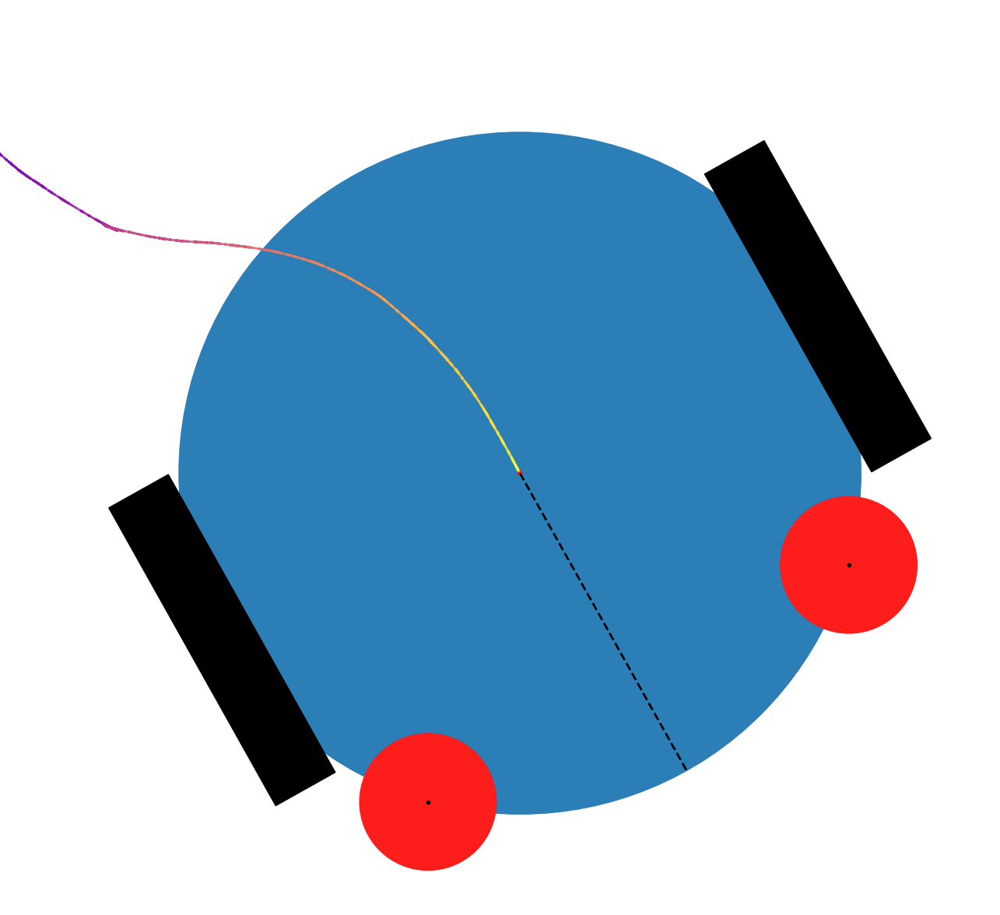

Agents¶
Agent class¶
-
class
Sandbox.Agent(x: float, y: float, colour: str, theta: Optional[float] = None, radius: float = 1, light: Optional[Sandbox.stimuli.LightSource] = None)[source]¶ An
Agentis an abstract subclass ofSystem. Classes which represent specific types of mobile agents, e.g.Robotare subclasses ofAgent.An
Agentis a mobileSystemwith position and orientation. It is expected that anAgentwill have sensors, a controller, and some way of moving through its environment.When you subclass
Agent, you will need to implement the following methods:step_sensors(dt)control(activations, dt)step_actuators(speed_commands, dt)integrate(actual_speeds, dt)and
update_children_positions()as well as
pygame_draw(self, screen, scale: float, shiftx: float, shifty: float), if you are going to animate your simulation
These methods split up the
Agent’s side of its sensorimotor loop. The main reason for splitting them up is to make it easier to subclass agent implementations. For example, to add sensors to an existingAgentsubclass, you would only need to overridestep_sensorsandcontrol-step_actuatorsandintegratedon’t need to be touched. Another example would be if you wanted to change the dynamics of motion when subclassing an existingAgent- it may only be necessary to override theintegratemethod, and leave the other methods as they are.-
__init__(x: float, y: float, colour: str, theta: float = None, radius: float = 1, light: LightSource = None)[source]¶ - Parameters
x (float) – The
Agent’s initial x-coordinate.y (float) – The
Agent’s initial y-coordinate.theta (float) – The
Agent’s initial orientation.radius (float) – The radius of the
Agent’s body.colour (str) – The colour of the
Agent’s body.light (
LightSource) – TheLightSourceattached to theAgent’s body.
-
push(x: Optional[float] = None, y: Optional[float] = None, theta: Optional[float] = None)[source]¶ A method used to “push” an
Agentto a new position and orientation. The agent can be pushed in any single axis (x, y, rotation) or any combination of those axes.This method is here for environmental interactions such as those between an
Agentand anArena. TheArenatakes care of watching for collisions between agents and its walls, and when it detects one, it pushes the colliding agent back inside, using this method. It is important that this method is used, rather than just directly changing the agent’sx,y, andthetaattributes, as this method will also update the states of attached systems, such as sensors.- Parameters
x (float) – The x-coordinate to push the agent to. Defaults to
None, in which case the agent’s x-coordinate will be unchanged.y (float) – The y-coordinate to push the agent to. Defaults to
None, in which case the agent’s y-coordinate will be unchanged.theta (float) – The orientation to push the agent to. Defaults to
None, in which case the agent’s orientation will be unchanged.
Robot class¶
-
class
Sandbox.Robot(x: float, y: float, controller: Sandbox.Controller.Controller, sensors: List[Sandbox.sensors.LightSensor], sensor_angles: List[float], radius: float = 1, theta: float = 0, left_motor_max_speed: float = 2, right_motor_max_speed: float = 2, left_motor_inertia: float = 0, right_motor_inertia: float = 0, left_motor_noisemaker: Optional[Sandbox.noise.NoiseSource] = None, right_motor_noisemaker: Optional[Sandbox.noise.NoiseSource] = None, left_motor_reversed: bool = False, right_motor_reversed: bool = False, colour: str = 'darkblue', light: Optional[Sandbox.stimuli.LightSource] = None)[source]¶ A
Robotis a subclass ofAgent, and represents a mobile robot with a differential drive, i.e. two motors, on either side of its body, which can be driven at different speeds. ARobotcan have an arbitrary number ofLightSensorobjects. It can also have aLightSourceattached to its body, so that it can be seen by other agents with light sensors.A
Robot, as drawn in Matplotlib. While this example has two light sensors, much like Braitenberg’s simpler vehicles, aRobotcan have an arbitrary number of sensors.¶-
__init__(x: float, y: float, controller: Controller, sensors: List[LightSensor], sensor_angles: List[float], radius: float = 1, theta: float = 0, left_motor_max_speed: float = 2, right_motor_max_speed: float = 2, left_motor_inertia: float = 0, right_motor_inertia: float = 0, left_motor_noisemaker: NoiseSource = None, right_motor_noisemaker: NoiseSource = None, left_motor_reversed: bool = False, right_motor_reversed: bool = False, colour: str = 'darkblue', light: LightSource = None)[source]¶ - Parameters
x (float) – Robot’s initial x-coordinate
y (float) – Robot’s initial y-coordinate
theta (float) – Robot’s initial orientation, in radians. Defaults to
0.0radius (float) – Radius of robot’s body. Defaults to
1.0controller (Instance of subclass of
Controller) – Robot’s controller systemsensors (List of instances of subclasses of
SensorThe subclass will typically beLightSensor, but it can be others as long as their step methods have the same inputs/output) – List of robot’s sensor systemssensor_angles (List of floats) – List of the angles corresponding to the list of sensors
left_motor_max_speed (float) – Maximum speed (magnitude) of robot’s left motor (which is an instance of
Motor). Negative values will be converted to positive ones when the motor is initialised.right_motor_max_speed (float) – Maximum speed (magnitude) of robot’s right motor (which is an instance of
Motor). Negative values will be converted to positive ones when the motor is initialised.left_motor_inertia (float) – Inertia parameter for the robot’s left motor
right_motor_inertia (float) – Inertia parameter for the robot’s right motor
left_motor_noisemaker (NoiseSource) – Noise source for robot’s left motor (usually an instance of
NoiseSource). Defaults toNoneright_motor_noisemaker (NoiseSource) – Noise source for robot’s right motor (usually an instance of
NoiseSource). Defaults toNoneleft_motor_reversed (bool) – A flag which is used to detrmine whether or not the robot’s left motor runs in the reverse direction. Defaults to
Falseright_motor_reversed (bool) – A flag which is used to detrmine whether or not the robot’s right motor runs in the reverse direction. Defaults to
Falsecolour (str) – Colour of the robot’s body. Defaults to
'darkblue'light (Instance of
Light) – The light which is attached to the robot, so that it can be detected by other robots (instance ofLightSource). Defaults toNone, in which case the robot has no light attached.
-
control(activations: List[float], dt: float) → List[float][source]¶ Only called from step().
A method which gets motor speed commands by calling the step method of the robot’s controller.
-
get_data() → Dict[str, Dict[str, Any]][source]¶ Get the robot’s simulation data, including the data from its sensors, motors and controller.
-
integrate(speeds: List[float], dt: float) → None[source]¶ Only called from step().
Applies a motor activation vector to an agent state, and simulates the consequences using Euler integration over a dt interval.
-
pygame_draw(screen, scale: float, shiftx: float, shifty: float) → None[source]¶ Draw robot on PyGame screen.
-
reset(reset_controller: bool = True) → None[source]¶ This method resets a robot’s state and simulation data to their initial values, so that it can be used again.
- Parameters
reset_controller (bool) – determines whether or not the robot’s controller is also reset, defaults to
True. This is because sometimes you might want to reset a robot and simulate it again taking advantage of any information or learning which the controller has acquired.
-
{kind=link}